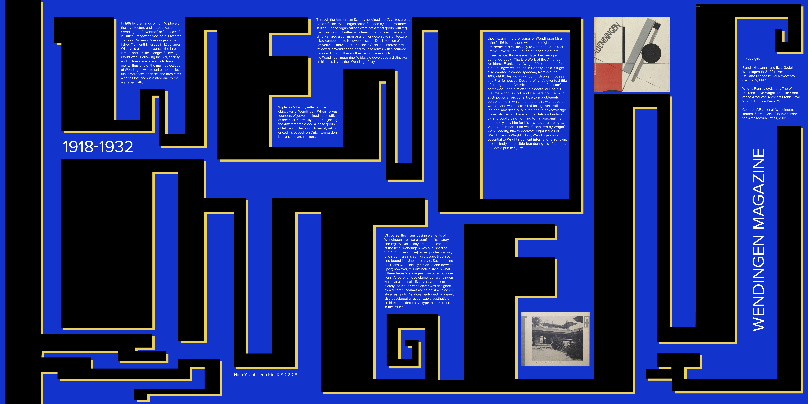
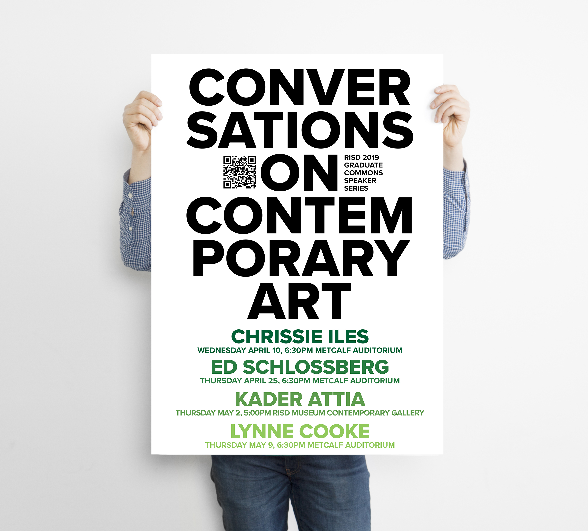
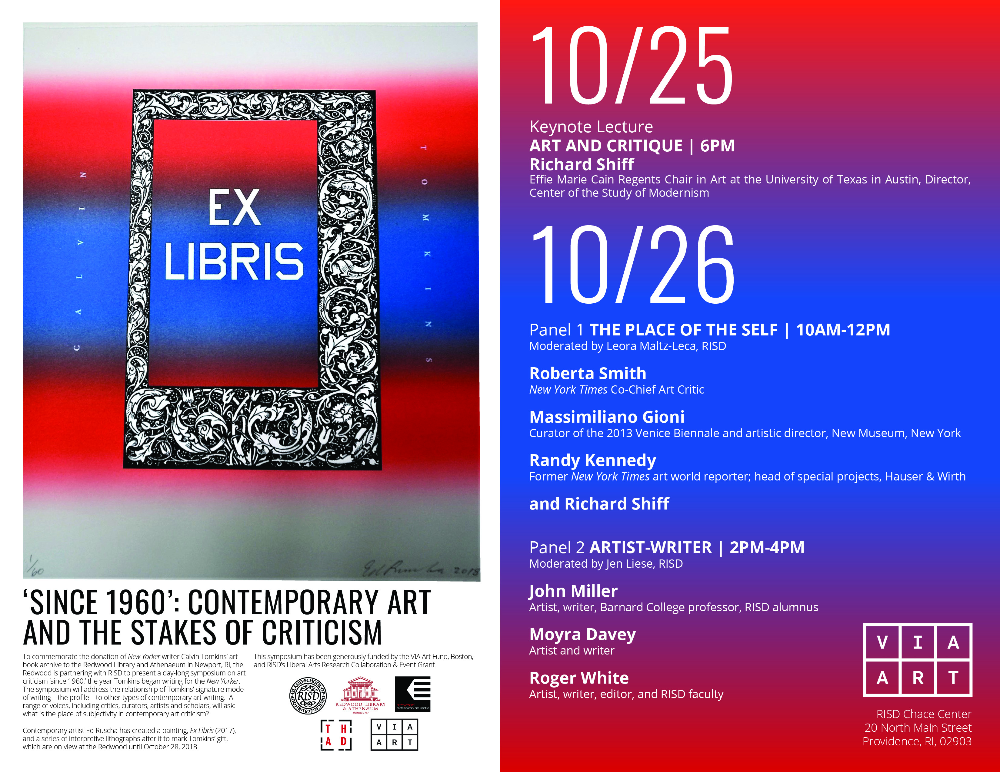

Various posters for studio assignments and extracurricular work.

Click image for larger size.
After writing an essay examining the influence of Wendingen Magazine (found here) for History of Graphic Design studio, I created my own design based on the decorative, architectural type designed by H. D. Wijdeveld. It plays with the idea of Wendingen’s deviation from the norm of legibility and easy-to-read publications by exaggerating the forms of each letter.

For Design Studio 2, I redesigned the packaging for Flaming Hot Cheetos with the 15 other design styles and displayed them as a snack variety pack order online.
 Posters I worked on as a web and design assistant for the Department of Theory and History of Art and Design.